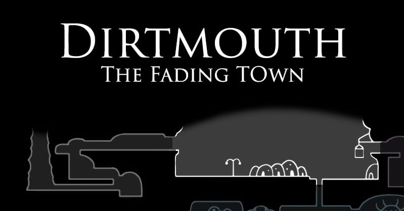

| Descripción |
Bocasucia es un pequeño pueblo situado en la superficie, que parece ser uno de los pocos lugares seguros en el valle. |
| Como llegar |
Para llegar a Boca Sucia al inicio del juego, comienzas en una cueva llamada Camino del Rey. Solo tienes que avanzar hacia la derecha, derrotar algunos enemigos simples, y al final saltar por un precipicio. Cuando caes, verás un cartel con una lámpara encendida: sigue ese camino y llegarás directamente a Boca Sucia.
Si ya has explorado otras zonas del mapa, puedes volver fácilmente usando las estaciones del ciervo (los Stag Stations). Solo tienes que encontrar una y seleccionar “Boca Sucia” para viajar directamente allí, siempre que ya hayas activado la estación de esa zona.
|
| Objetos coleccionables |
1 fragmento de mascara en casa de bretta |
| npcs |
- Viejo Insecto
- Confesor Jiji
- Iselda
- Sly
- Zote el Todopoderoso
- Alma de Acero Jinn
- Cornifer
- Sepulturero
- Bretta
- Tiso
- Nymm
- Divine
- Grimm
- Brumm
|
| jefes |
- Invencible,
Audaz,
Sensual,
Misterioso,
Encatador,
Vigoroso,
Diligente,
Abrumador,
Espléndido,
Apasiosanado,
Terrorífico,
Bello,
Poderoso,
Príncipe Gris Zote
- Grimm
- Rey Pesadilla Grimm
|
| Imagen del mapa |
 |